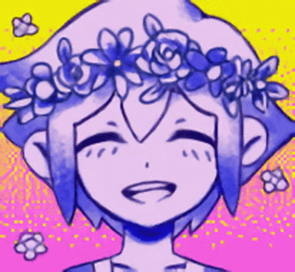

Lily Silva
Lilyuzumi@gmail.com
Linkedin
Tecnologias
HTML
Css
JavaScript
Fale um pouco sobre você
Sou uma adolescente de 15 anos que estuda na instituição senac joinville-sc.
Meus planos para o futuro é decidir o que seguida apartir dos conhecimentos adiquiridos durante o curso tecnico que estou cursando
juntamente ao ensino médio ou seguir na área de design gráfico
Escolaridade
escola fundamental 1 e 2 finalizado, ensino medio primeiro ano
Conhecimentos
basico html, basico css, basico c#, basico JavaScript, especialização em photoshop,
illustrator, xd, premiere, lightroom, after effects, construct 2 e 3ds max